Two wheels
Riding
I take my Husqvarna Svartpilen 250 across Istanbul, usually to a new place for kebab or fish.

Beyond the lab
Outside the lab I would rather be doing something than watching it: riding, running, swimming, building, or walking around a city I haven't seen yet.
I've lived in Istanbul since 2018, when I started at Koç University, and I'm now an M.Sc. student in the Medical Robotics Lab there. On weekends and holidays I travel to other cities, and sometimes I go back to my home city, where I get on my bicycle.
Two wheels
I take my Husqvarna Svartpilen 250 across Istanbul, usually to a new place for kebab or fish.
Endurance
I swim, and I run now and then. A 10K at about 5:00 per kilometre is my pace so far.
Side projects
Small electronics projects of my own, from the circuit to the code, just because I want them to exist.
Museums and monuments
I'm drawn to museums and to gigantic structures, the kind of building that makes you wonder how anyone made it.
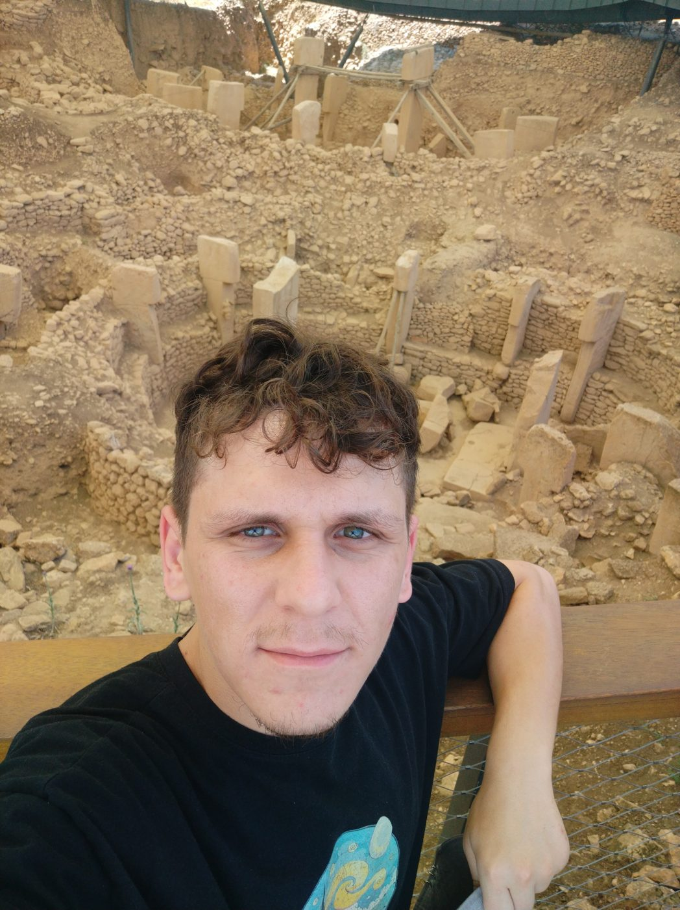
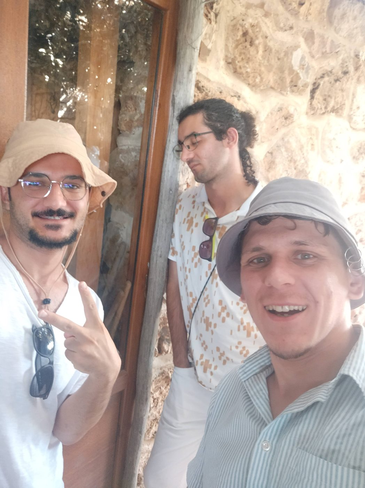
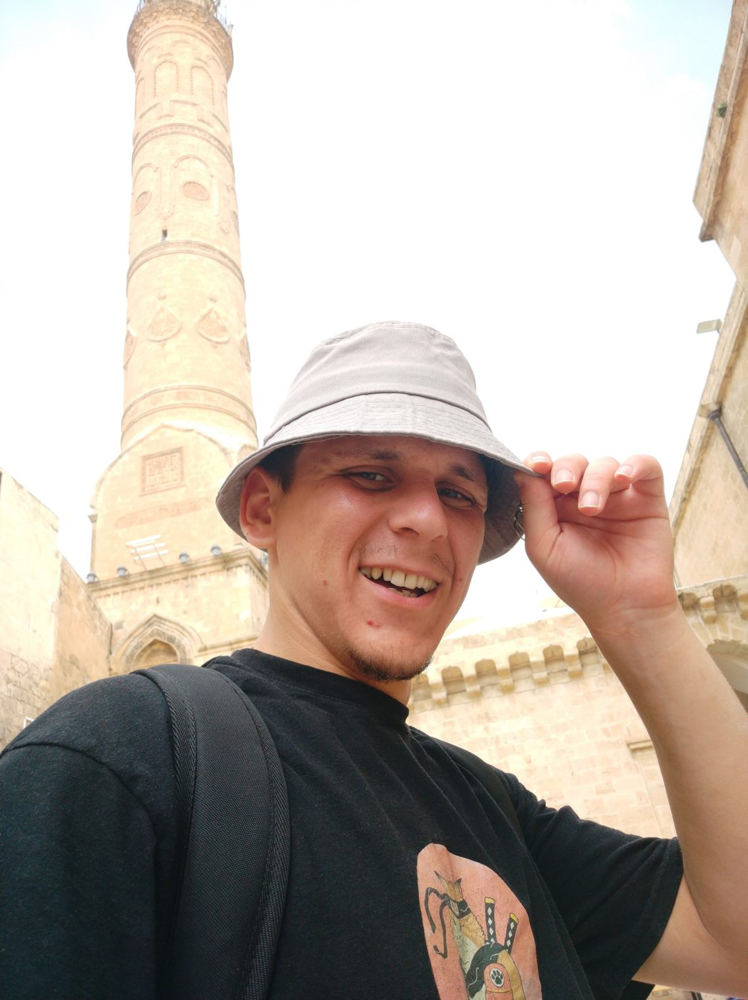
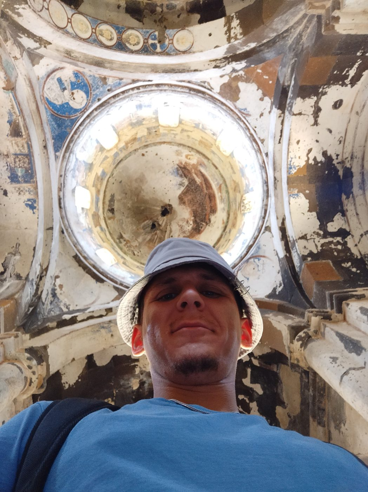
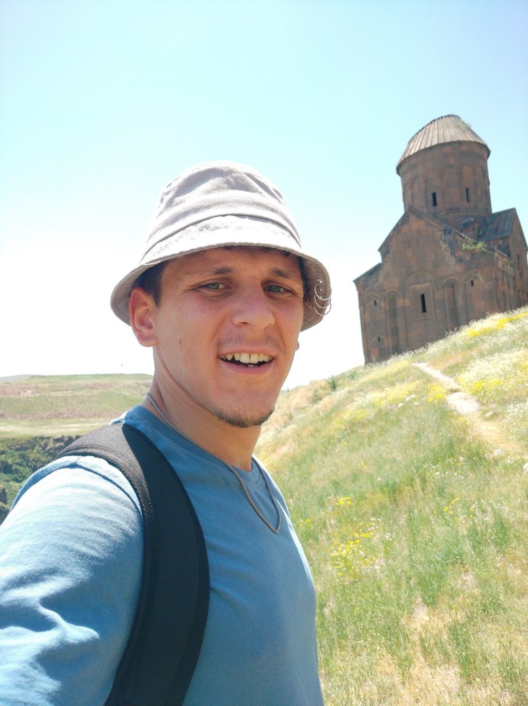
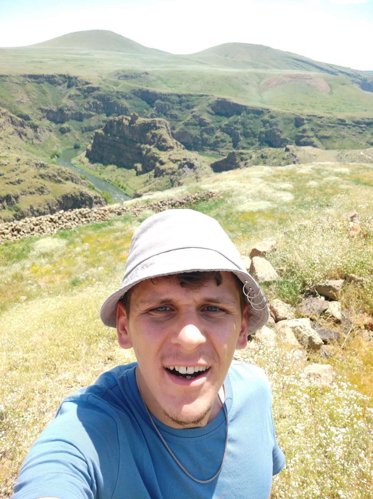
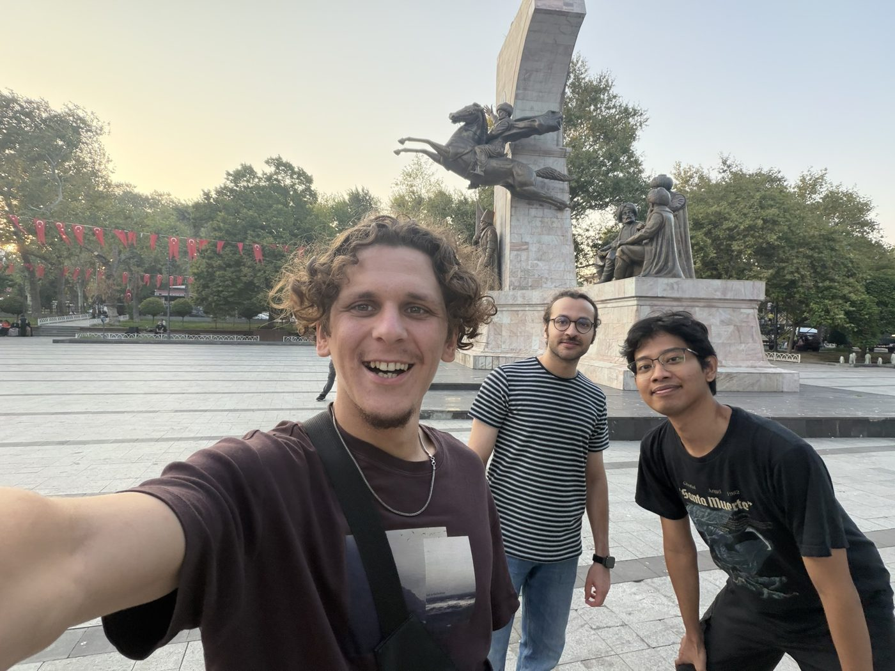
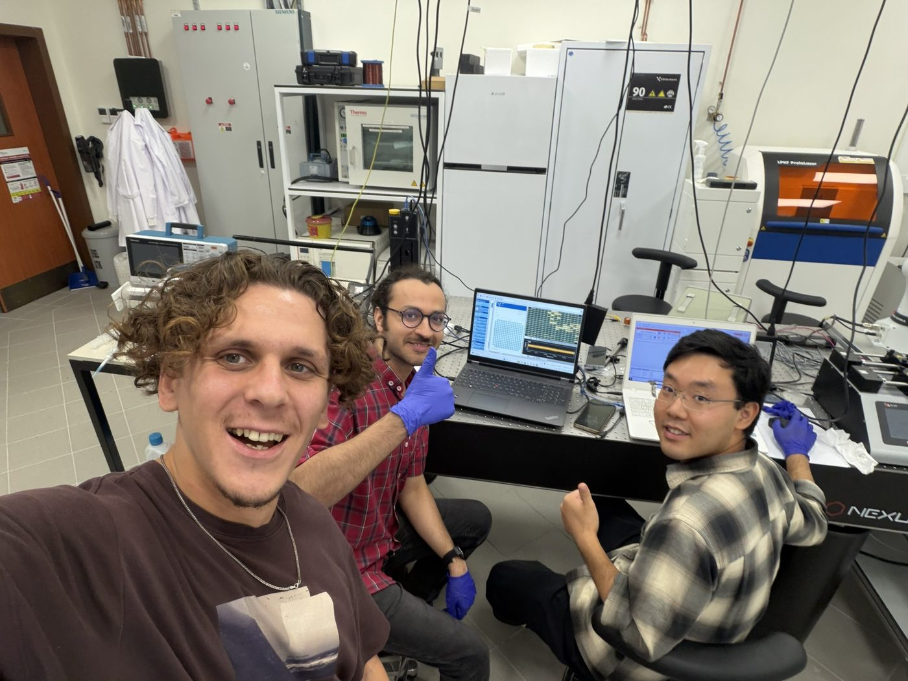
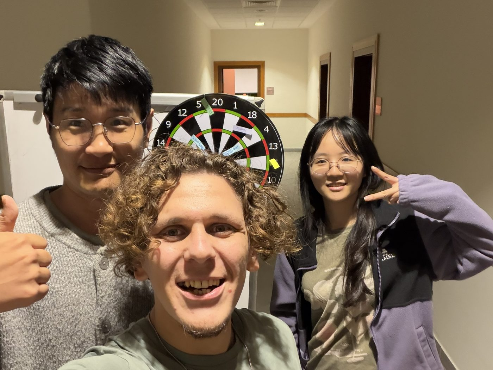
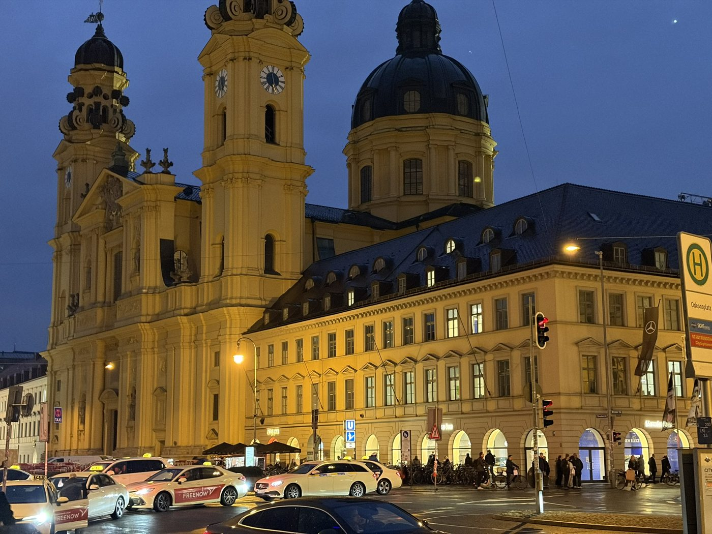
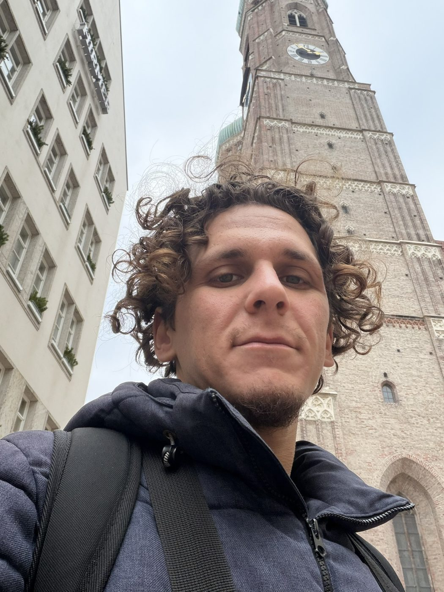
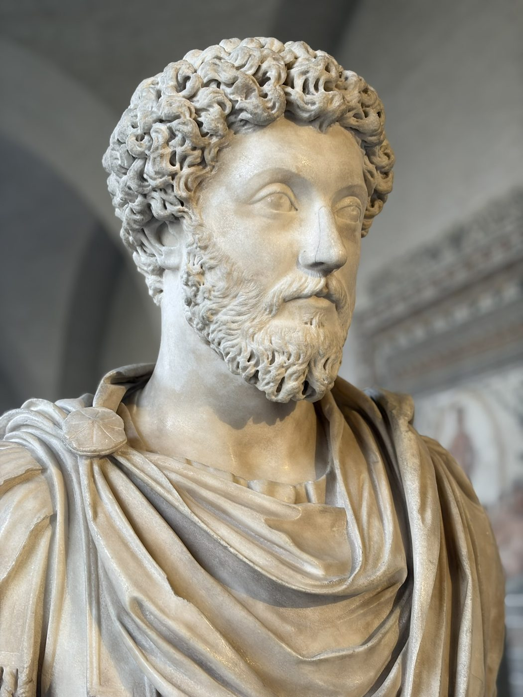
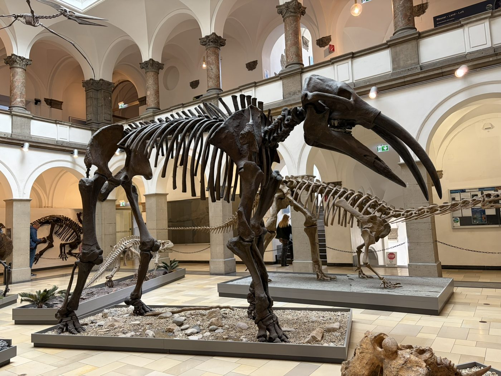
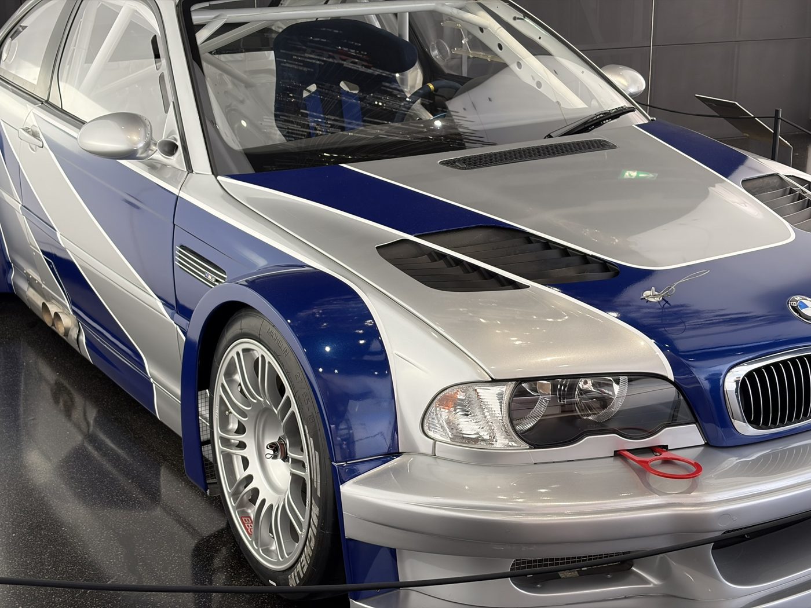
At Koç I've given peer academic support to fellow students in core engineering courses.
Whether it's robots, a good kebab place or a building worth the trip, I'd love to hear from you.
Send me an email